강원도 스포츠 패스포트 도장 90종
18개 시·군 × 5개 스포츠 카테고리
#01 춘천 · 산악
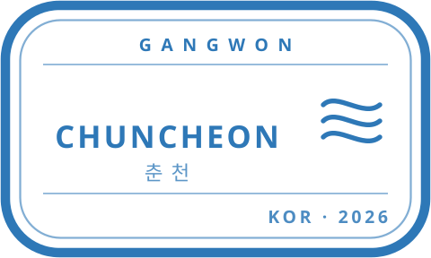
#02 춘천 · 수상
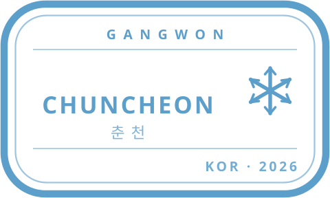
#03 춘천 · 설상
#04 춘천 · 올림픽
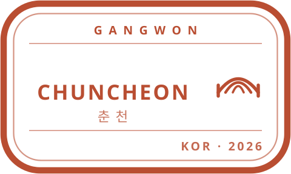
#05 춘천 · 육상
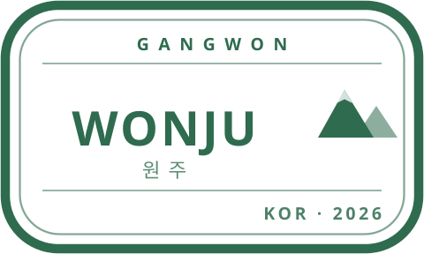
#06 원주 · 산악
#07 원주 · 수상
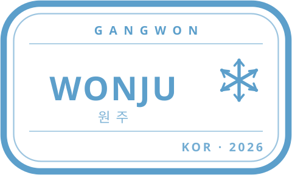
#08 원주 · 설상
#09 원주 · 올림픽
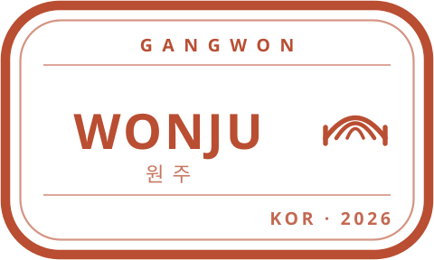
#10 원주 · 육상
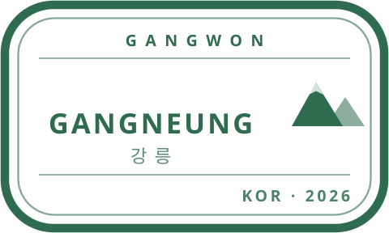
#11 강릉 · 산악
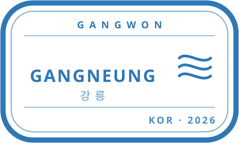
#12 강릉 · 수상
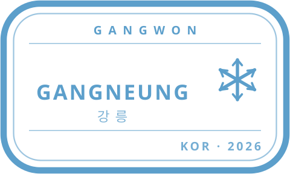
#13 강릉 · 설상
#14 강릉 · 올림픽
#15 강릉 · 육상
#16 동해 · 산악
#17 동해 · 수상
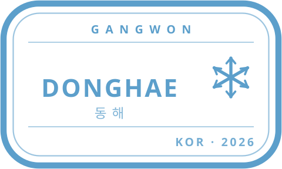
#18 동해 · 설상
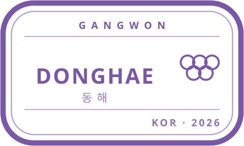
#19 동해 · 올림픽
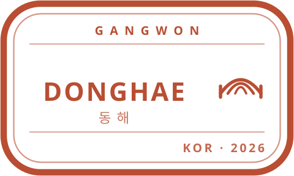
#20 동해 · 육상
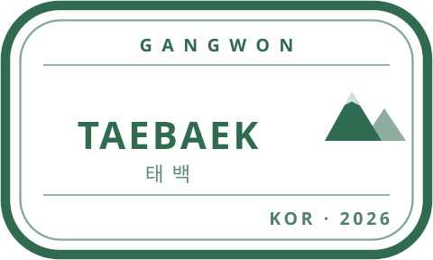
#21 태백 · 산악
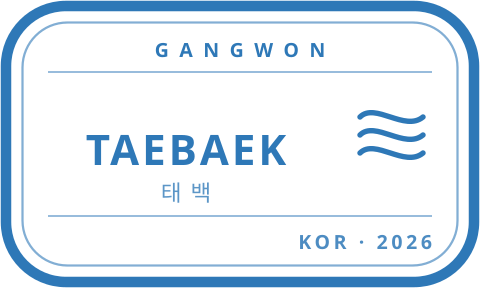
#22 태백 · 수상
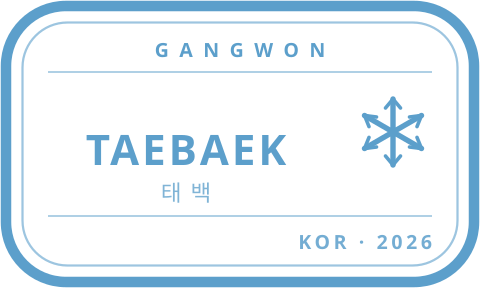
#23 태백 · 설상
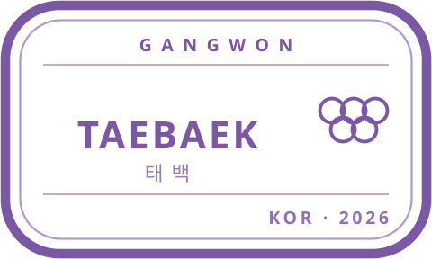
#24 태백 · 올림픽
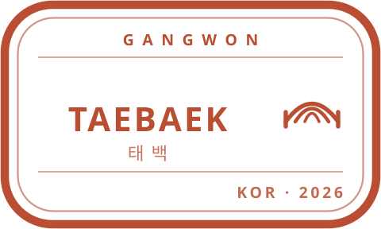
#25 태백 · 육상
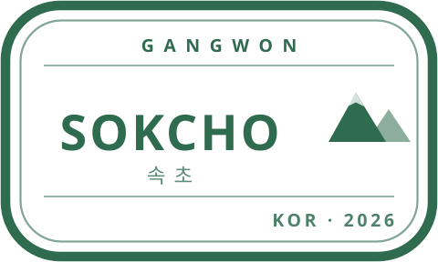
#26 속초 · 산악
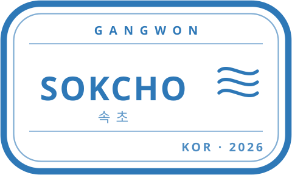
#27 속초 · 수상
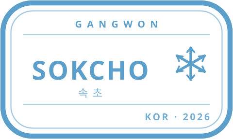
#28 속초 · 설상
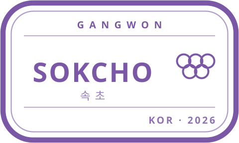
#29 속초 · 올림픽
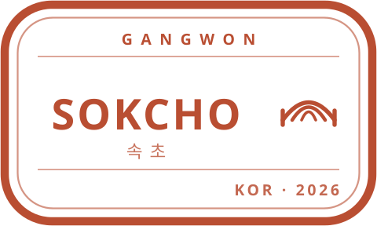
#30 속초 · 육상
#31 삼척 · 산악
#32 삼척 · 수상
#33 삼척 · 설상
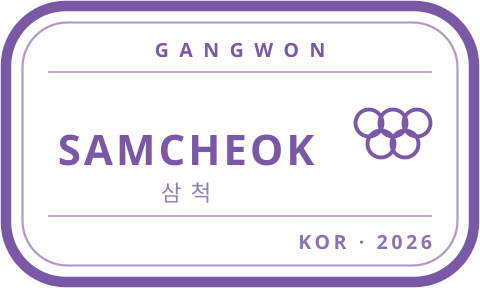
#34 삼척 · 올림픽
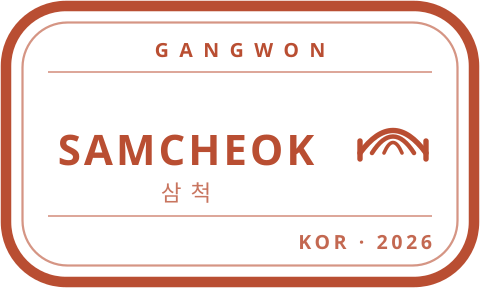
#35 삼척 · 육상
#36 홍천 · 산악
#37 홍천 · 수상
#38 홍천 · 설상
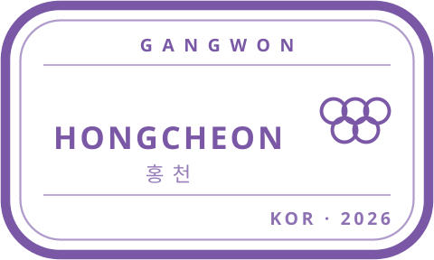
#39 홍천 · 올림픽
#40 홍천 · 육상
#41 횡성 · 산악
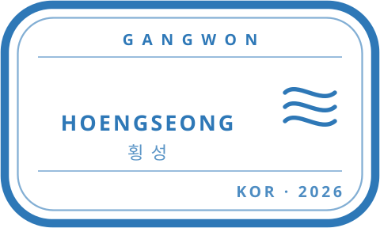
#42 횡성 · 수상
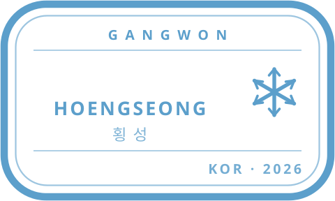
#43 횡성 · 설상
#44 횡성 · 올림픽
#45 횡성 · 육상
#46 영월 · 산악
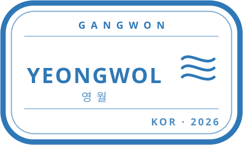
#47 영월 · 수상
#48 영월 · 설상
#49 영월 · 올림픽
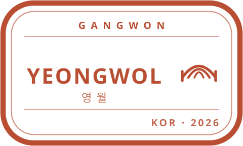
#50 영월 · 육상
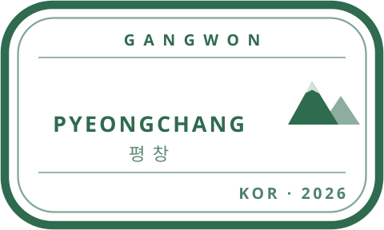
#51 평창 · 산악
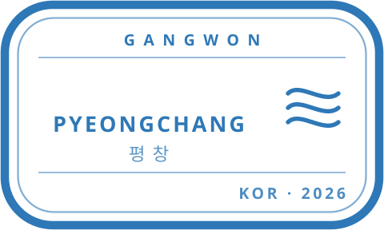
#52 평창 · 수상
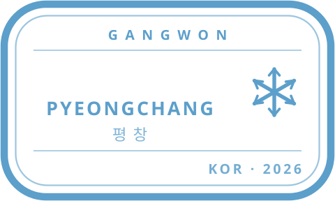
#53 평창 · 설상
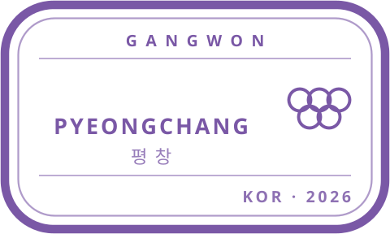
#54 평창 · 올림픽
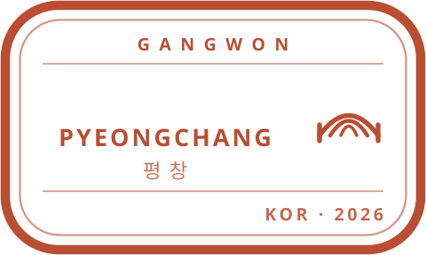
#55 평창 · 육상
#56 정선 · 산악
#57 정선 · 수상
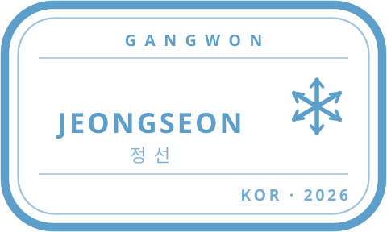
#58 정선 · 설상
#59 정선 · 올림픽
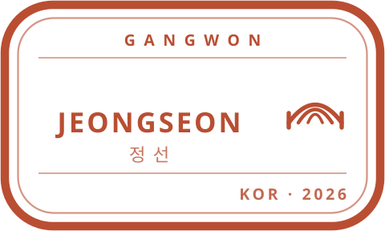
#60 정선 · 육상
#61 철원 · 산악
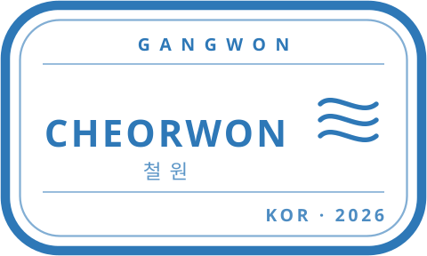
#62 철원 · 수상
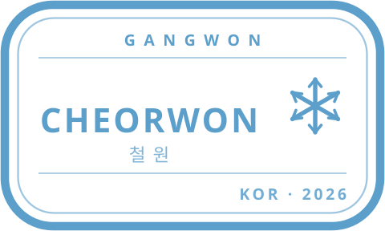
#63 철원 · 설상
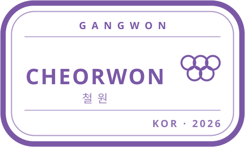
#64 철원 · 올림픽
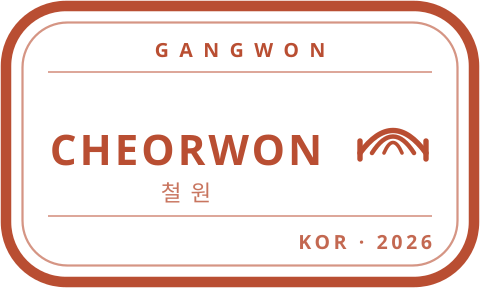
#65 철원 · 육상
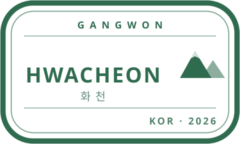
#66 화천 · 산악
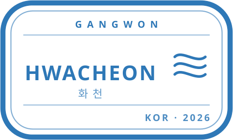
#67 화천 · 수상
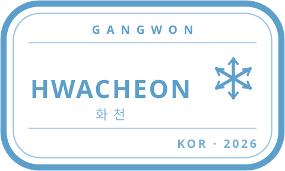
#68 화천 · 설상
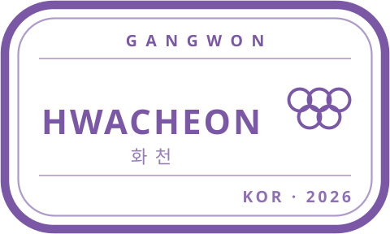
#69 화천 · 올림픽
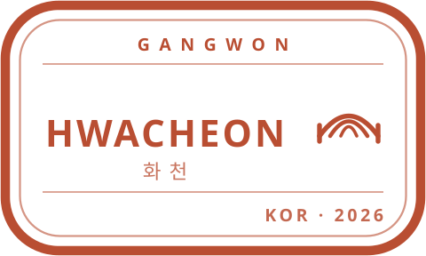
#70 화천 · 육상
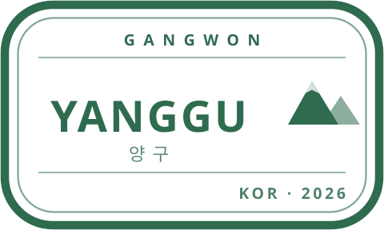
#71 양구 · 산악
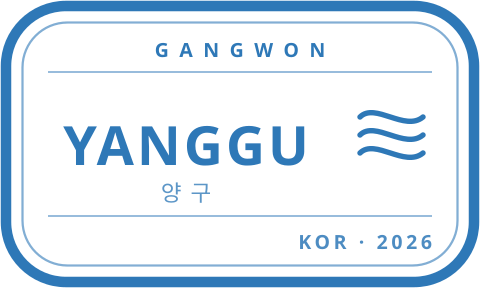
#72 양구 · 수상
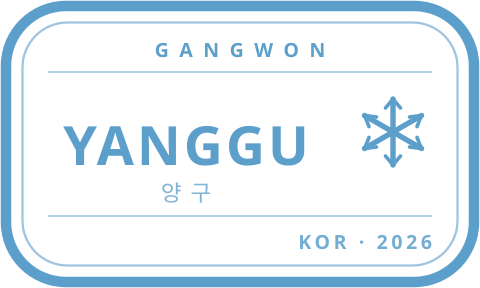
#73 양구 · 설상
#74 양구 · 올림픽
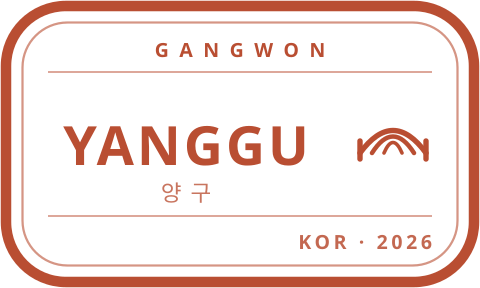
#75 양구 · 육상
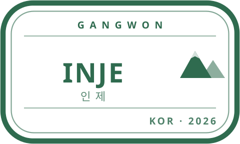
#76 인제 · 산악
#77 인제 · 수상
#78 인제 · 설상
#79 인제 · 올림픽
#80 인제 · 육상
#81 고성 · 산악
#82 고성 · 수상
#83 고성 · 설상
#84 고성 · 올림픽
#85 고성 · 육상
#86 양양 · 산악
#87 양양 · 수상
#88 양양 · 설상
#89 양양 · 올림픽
#90 양양 · 육상